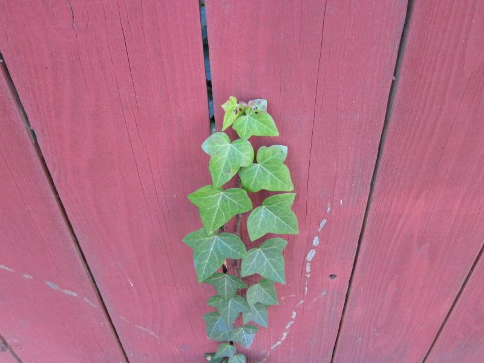

1. Here is the fence-ivy.jpg image.

Write code that picks out the pixels of the green leaves in the image (using the > avg * factor technique, as in lecture). For each green pixel identified, set its green value to 0. The result is that the green leaves are changed to a sort of weird purple color, since setting green to 0, we just have red and blue contributing.
|
|
2. Here is the stop.jpg image.
Write code that picks out the blue sky (using the > avg * factor technique, as in lecture). Change the blue pixels to be red=20 green=20 blue=20 .. so it looks like nighttime. Adjust your code so it changes the sky, but not the white letters in the sign (which are technically a little blue).
3. Here is the curb.jpg image.
The goal for this problem is to change the curb to look blue. Detect the red pixels of the curb using the avg technique as usual. For each pixel, change its red and green values to be half the average value, and change its blue value to 1.2 times the average value. In effect, this sets red and green low and blue high, making it look kind of blue. Note that the blue effect will apply to the reddish plants off to the right as well -- now they are blueish plants.